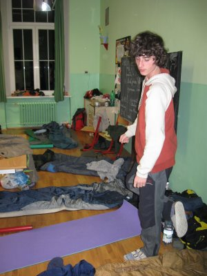
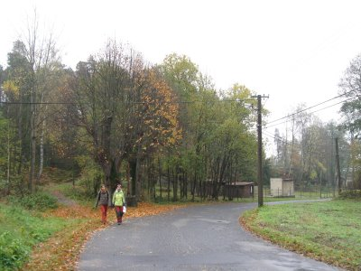
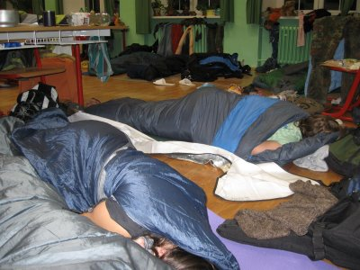

Prý mám něco napsat. Něco o orienťáku. Prý si to možná i někdo přečte. A tak píšu. Ano o orienťáku – není to úplně košer slovo, kontrola pravopisu protestuje, ale to protestuje i u slova košer, té se prostě moc věřit nedá. Abych vás nemátl a uvedl na pravou míru, trochu to objasním.
Orienťák, orientační běh, případně ještě Ostrovský o. b. je akce o podzimních prázdninách, koná se většinou v severních Čechách. Během tří dnů a jedné noci oběhnete stejný počet závodů. Orientační běh je totiž velmi zajímavý sport, při kterém dostanete na startu mapu (speciální – velké malé měřítko a trochu odlišné značky než u klasických map), chopíte se buzoly (speciální kompas s vychytávkami) a běžíte po trati s kontrolami, které musíte proběhnout. Samozřejmě v co nejkratším čase – i když to tak u někoho nevypadá, je to závod.
A tak jsme i my občas běhali, ale mnohem více chodili a koukali bezradně do mapy. Někdy i radně (pěkné slovo, co?), ale to opravdu málokdy. Nebudu to protahovat, obecnou představu máte a zbytek si domyslíte.
Tak jsem tedy v sobotu 25. října vyrazil, abych se v Praze setkal se zbytkem Tchoříků a společně pak vyrazili nahoru na sever Čech – do Cvikova. Neslyšeli jste o tomhle městě? Ani se vám nedivím. I světa znalý pan učitel Chvojka, který byl dokonce za Velkou louží (o čemž nám rád vypravuje), se podivil a nechal si to dvakrát zopakovat (a i tak mi moc nevěřil a tvrdil, že jedu do Jizerek).
Do Prahy jsem dorazil poměrně snadno. I výluka mezi Plzní Valchou a hlavním nádražím mne nerozházela. V Praze se mi dokonce podařilo najít zbytek party dřív než oni mne (mohl za to McDonald, ale to je celkem detail). Na autobusové zastávce v Holešovicích jsem našel Jirku v obležení známých batohů. Mimochodem je to IT kolega, což občas zbytek, to jest Lenka s Jáňou, nesl těžce – počítačoví (skoro) odborníci jsou prý často nepochopitelní a nenormální. Nebojte, já jim nevěřím. (Jo, kecám, je to pravda [editace 22.11.2009]).
Za chvilku se vrátily i ony dvě, ale to už jsme byli rozjetí a počítače nešlo dost dobře zastavit. No, možná na té nenormálnosti trocha pravdy je – to se ukázalo zvlášť při odtajnění počtu ztrávených hodin té věcičky (možná časožrouta).
Nahoru na sever se jelo QuickBusem, ve kterém vyhrávala Top 200 Hitparáda, my podřimovali, poslouchali Waldemara Matušku a sledovali krajinu kolem. Venku se počasí rapidně zhoršovalo – v Praze svítilo sluníčko, už u Mělníka byla mlha a lezavo.
Vystoupili jsme v Novém Boru a čekali společně s Markem a Ájou (doufám, že to nepletu, jména si moc dobře nepamatuji a nápověda – psaní od Jáni – mi nepomohla, páč to tam vůbec není zmíněno), dalšími běžci a pak jeli místním spojem až do Cvikova.
Severní Čechy jsou podle názoru mnohých hrozné, musím se přiznat, že mi Cvikov velmi připomínal Ukrajinu – moc jsem nefotil, takže to musím popsat. Pár pěkných baráků by se tam našlo, ale vedle nich máte zavřené továrny, rozpadající se dřevěné domečky a samoobsluhu s Vietnamci. Po šesté hodině večer se město vyprázdnilo a nepotkali jste ani živáčka.
Ubytovaní jsme byli v základní škole, do třídy jsme se nacpali k domácím – k Ostrovákům, dobře jsme udělali, bylo veselo. Pak tu byli ještě Royal Rangers a Pražáci – přesně to po mně nechtějte, prostě si to nepamatuji a mohl bych to splést, což by se mi vůbec nelíbilo.
Ještě ten večer, či spíše noc, kdy jsme přijeli, byl na programu noční závod. Běhalo se po dvojicích a ve dvou kategoriích – já s Jirkou v kategorii K2 a Lenka s Jáňou v kategorii K1. Samozřejmě čím vyšší číslo tím delší trať, větší obtížnost.
Můžu se jen nepatrně zmínit o tom, že jsme se s Jirkou a ještě s Petrem a Ájou, které jsme potkali cestou, topili v bažinách, padali ze strmých srázů a lezli po příkrých skalách. Nalezli jsme celkem sedm kontrol. První po hodině, druhou po stejné době, ale třetí už po půl hodince, čtvrtou asi za patnáct minut a pak to jelo skvěle. Jenže pak byla skoro půlnoc a závod byl ukončen již někdy před hodinou, možná i víc. A tak jsme to otočili a vrátili se zpět do Cvikova. Sice jsme byli diskvalifikováni, ale přežili jsme to.
Co zažili holky psát nemůžu, překvapivě jsem u toho nebyl a tak si raději přečtěte povídání od Jáni. Jediné co by stálo za to zmínit je to, že doběhli jako první.
My jsme se vrátili tedy někdy po půlnoci, celé osazenstvo už vesele chrápalo, samozřejmě na pár výjimek – pořadatelé si nás mohli odškrtnout s povzdechem o tom, že konečně můžou jít spát.
Ráno jsme pozorovali naše sousedy – Ostrováky. Zjistili jsme, že jsou nezdravě aktivní a že od časného rána pobíhají, snídají, uklízejí, nu prostě jsou nezvykle živí. My je pozorovali z teplých spacáků, nechápali jejich spěch a pronášeli něco o nemoudrosti takovýchto počinů.
Přes den se běhali štafety. Měl jsem to štěstí, že se se mnou na poslední chvíli prohodila Jáňa a já tak neběžel s pošuky, kteří chtějí vyhrávat, ale s baťůžkáři, kteří jsou mi nesporně sympatičtější – s těmi, kdo to moc neprožívá, raději si užívá krajiny a přírody a je rád, když najde všechny kontroly co nejsnáze. Nemusel jsem se tak moc stresovat a doběhl jsem v průměrném čase. Už jsme nějakou tu chvíli čekali u ohně a nahřívali si a sušili co se dalo, když se vrátil Jirka. Prý se zasekl u první kontroly, ale pak už to šlo samo. Odpoledne jsme prospali, ani nevíte, jak snadné je si na takový odpolední spáneček zvyknout. To neodoláte, najednou to na vás padne a spíte. A pak vás budí průvodčí, ale to sem vůbec nepatří.
K večeru jsme se probrali a přesunuli se do sousední vesnice na večeři. V Cvikově totiž není jediná normální restaurace a to není můj ani náš výmysl, ale potvrdil nám to i jeden domorodec.
Myslím, že jediný, kdo si jídlo trochu užil, jsem byl já. Mohl bych poznamenat, že z domova jsem zvyklý ještě na větší patlaniny, aneb citace Hurvínka, hezčí ale bude, když řeknu, že jsem nenáročný člověk a polívka a knedlíky s něčím, co mělo být kuře na paprice mi nevadí, i když se to svému názvu moc nepodobá. Ostatní to protrpěli a přesně tipovali, že zítra bude rizoto a pozítří guláš. A jak to tak na podobných akcích bývá (zvlášť na těch křesťanských), dalším bodem našeho programu byl večerní program. Teď si nejsem jistým ani tím co se mám psát, ani tím jak to mám psát, aby to pochopil co možná každý. Asi použiji jako příklad mou sestřenici. Ta se totiž dala nedávno ke katolíkům. Proč ne k protestantům? Jednoduchý důvod, existují totiž odstrašující případy - náboženství, zákonitost, morálka a kdo ví co ještě v jednom člověku, bohužel v drtivé většině jsou to právě protestanté. A tak je prý katolická církev v mnohém volnější.
Pěkným úkazem tohoto jevu je Verunka H. Když se táta díval na fotky a náhodou ji tam zahlédl, poznamenal něco o tom, že je to pěkný případ. Večerní program měla na starost právě ona a hned po první její otázce jsme s ní byli my, Tchoříci, na kordy.
Na otázky ve stylu „Co vzít na Ostrovský orientační běh?“ nebo „Co si vzít do baťůžku do Božího království?“ se totiž nesmí odpovídat moc upřímně, mnohem lepší je to ve frázích. Ale to mi nedovedeme, ani to umět nechceme. My jsme se drželi stranou a ani jsme nechtěli moc své názory propagovat – trochu jsme vytušili, že tady pro to není ta správná půda. I nám, křesťanům od narození, Bible jako nejnutnější věc na Orienťák nepřipadá. Kdyby se Ostrováci dozvěděli, že sebou Bibli vůbec nemám, v lepším případě by mne prohlásili za kacíře, v horším ukamenovali. (Po roce můžu říct, že po orienťáku jsem bezděky začal tahat Bibli všude. Ale vůbec ne kvůli tomu… [Editace 22.11.2009])
Ani na druhou otázku jsme nedokázali odpovědět dobře. I po zpřesnění otázky (co byste si chtěli brát do Nebe? Snad nic, ne?) a změně na „Co potřebuješ v životě k cestě do Nebe?“, jsme správně odpovědět nedokázali.
Když jsme totiž řekli, že nám k tomu stačí Ježíš, Verunka nás tvrdě usadila, nevěřícím a nechápajícím hlasem se nás zeptala, jak bychom se o něm asi chtěli dozvědět? Pokud se vás tedy bude někdy Verunka ptát, správná odpověď je v první řadě opět Bible, pak pokora, láska a nedivil bych se kdyby tam dali také píli a velkou snahu. V této chvíli jsem rezignoval a šel jsem to zajíst čokoládou a trochu to rozdýchat.
Nicméně jsme přežili do konce programu a byli s milostí propuštěni. Další den se konal takzvaný Expedičák – závod po družstvech, nejdříve klasický orienťák s tím, že je potřeba posbírat různé body a podle nich pak dál postupovat. S naším umem, zkušeností a odhodlaností (fuj, nesmrdí tady něco?) se nám podařilo zvítězit. Jak to probíhalo?
Do skupiny jsme dostali dvě mapy – jednu k posbírání bodů, druhou k jejich plnění. Proč by se ale měli čtyři lidé hnát s jednou mapou? Jediným logickým krokem bylo se rozdělit. Paní na obecním úřadě nám ochotně okopírovala mapu, ani úplatek si nevzala a my tak mohli být dvakrát rychlejší. Půlku trasy prošla Jáňa s Lenkou, druhou půlku já a Jirka. Po dvou závodech už jsme byli o něco zkušenější a tak nám to šlo opravdu rychle. Drobný problém měla naše druhá půlka, aby to nebylo totiž tak jednoduché, ve vymezeném území mezi kontrolami nás chytali pořadatelé (nepřátelští už ani nevím co) a ti nám po chycení museli dát úkol. Jirkovi a mně se podařilo všem uniknout, Lenka s Jáňou už takové štěstí neměli a museli skládat žalozpěv.
Během hodinky a pár minut byly všechny body nalezeny, instrukce vyfoceny nebo opsány a my tak mohli vyrazit na druhý okruh. Tak trochu se mi zdá, že kolem Cvikova není nic jiného než hrozné srázy a bažiny. První stanoviště totiž bylo na konci rybníka v bažince, u troj-stromu a termitiště. Podle mapy jsme tam trefili pěkně, v bažince se také topilo pěkně, ale ani po velmi dlouhé době nebylo nic nalezeno. To už jsme trochu propadali trudnomyslnosti. Drobnou chybkou totiž bylo, že rybníček byl o pár set metrů jinde. Stane se.
Druhým cílem bylo tuším vyhlídka U Naděje. Zkušenosti z předchozích táborů a akcí nám radily spolehnout se trochu na domorodce a nechat si poradit. Jedna paní nás poslala na milimetr přesně k danému bodu. Pak azimutem k další Naději, tentokrát k vesnici. Měl tam někde čekat Petr M. s překvapením, podařilo se nám ho nalézt ale jen díky radě Radka Čermáka, který nás poslal po fáborkách. Petr M. čekal v útulné jeskyňce zbylé po nějakém lomu. Trochu jsme se ohřáli u ohně, posilnili se a vydali se dál. Možná by stálo za zmínku, že pokud si představíte opravdu hnusné počasí, uhádnete přesně takové počasí, jako v ten den a vlastně v celý pobyt bylo. Stručně a jasně, aby mne každý chápal (prý se i to stává) bylo hnusně, často pršelo, zima, co víc si přát.
Při přecházení dalších řek a potůčků téměř všichni, až na Lenku, kašlali na vodu a brodili se jako to šlo. Další místo s úkolem jsme našli snadno a tím sranda skončila. Mapu jsem totiž do ruky dostal já, což byl jeden problém, lehce se mi podařilo ztratit, nakonec jsme se zase našli, a i když jsme si byli na sto procent jistí, že jsme na správném místě, kontrola nikde. Hledali jsme dlouho a když jsme i přesto nemohli nic najít, popošli jsme po silnici asi kilometr ke Svatému Jánu, abychom se přesvědčili, že jsme tam byli opravdu dobře.
Hledali jsme ještě pár minut a pak to vzdali a klesli na nejnižší úroveň. Učinili jsme jednu z těch věcí, kterými se vůbec nechlubím, ale na druhou stranu, dobře jsme udělali. Přehlasovali jsme rebely Lenku a zavolali Ostravákům a nechali si poradit, kde kontrola zhruba je.
Taky že jsme ji pak našli. Byli jsme na správném místě, hledali jsme správným směrem, problém byl jen v tom, že pytlík s papírky byl schován v jakémsi vyvráceném kořeni a fáborek, který ho měl označovat spadl a rozmáčel se, prý pak vypadal jak kus toaleťáku.
Pak jsme se rychle vydali k dalšímu bodu naší cesty – k hradu jehož jméno jsem zapomněl. Vzkaz měl být u stromu s budkou, jo jenže ouha, stromů s budkou tam bylo asi pět. A to už se šeřilo. Vzkaz byl až nahoře u hradeb, kde ho také Lenka objevila.
Pak jsme šli a běželi z kopce dolů. Tma byla čím dál tím větší, občas jsme si svítili Jirkovou baterkou a s obtížemi hlídali turistické značky. Poslední kontrola měla být ve skále nedaleko území, ve kterém jsme dopoledne hledali instrukce k dalšímu pokračování expedičáku.
Téměř zázrakem jsme natrefili na správnou skálu, na správné místo a snadno jsme papír našli. A pak rychle zpátky do Cvikova a do školy.
Vyhráli jsme, to nám nikdo nevyvrátil, i když se o to hodně snažili. (Přídavek po roce - neuznali to vůbec, ale letos z nás měli alespoň respekt :). )
Ostrováci totiž nemohli najít onu krásnou kontrolu u rybníka a tak se vrátili do školy, polovina z nich vzala baterky a šla hledat znovu v autech.
Když jsme se vrátili, trochu jsme uvažovali nad tím, že bychom přece jen ještě zkusili jít na večeři – třeba se polepšili a přijít o nějaký skvělý steak nebo hranolky jsme nechtěli. Vrchol všeho bylo ale oznámení ze shora, že dnes nemáme na večeři vůbec chodit, polévka je prý stejná jako včera a rizoto hrozně rozvařené.
Naše vítězství bylo snadno popřeno večerním programem, který na závod navazoval, mnohem důležitější než splnění úkolu a rychlost je totiž scénka hodnocená nám nenakloněnými dušemi. Věděli jsme, že v tomhle nemáme šanci, že nás prostě nepochopí a tak jsme zahráli jen tak z povinnosti a se shovívavým úsměvem jsme pozorovali bouřlivý potlesk při srdceryvném výstupu ostrovského pěveckého sboru, který nacvičil píseň o osvobození Cvikova.
Na víc než na remízu to ale neuhádali a nám dobrý pocit nikdo nevzal. Další den se běžel poslední závod, závod jednotlivců, my ale nechtěli nic riskovat, bažiny, skály a tak víte, a raději jsme vyrazili po dvojicích. Časy nijak závratné nebyly, my se o to ani moc nesnažili, takže to nějak nevadilo. Odpoledne jsme opět prospali a večer jsme vyrazili do města, najít nějakou hospodu nebo restauraci, v které by se dalo dobře najíst. Po zoufalém hledání a nenalézání jsme se zeptali jednoho domorodce a ten prohlásil, že tu nic takového není. Nakonec si to rozmyslel, a poslal nás kilometr na konec města k celkem solidní restauraci. Ale ouha, úterý a středa zavřeno. Dnes je úterý? Tak nám nezbylo nic jiného, než koupit brambůrky, kofolu a gumové medvídky na benzínce.
Co bylo večer za program si moc dobře nevzpomínám, asi nebylo nic, jen organizační upřesnění. Večer jsme měli sto chutí zakončit povedenou akci klasicky, dlouhým ponocováním, hraním pokeru a tak podobně. To jsme ale tvrdě narazili na ostrovskou stěnu. Prý, že zítra vstávají a že se chtějí vyspat. A nikde jinde místo nebylo. Skončilo to debatováním po tmě ze spacáčku, dokonce i Ostrováci se drželi a Milan nás poprosil až po dost dlouhé době, jestli bychom nechtěli už spát. Tomu se říká respekt, a to nás bylo asi pětkrát méně. (Kecám, jsou jen dobře vychovaný, nic víc v tom nebylo [22.11.2009])
Ráno se nám popravdě vůbec vstávat nechtělo, právě z rána pochází jedna skvělá dokumentační fotka. Uvidíte na ní jednu zmuchlanou neurčitou věc, z jedné strany bílou z druhé stříbrnou. Pro nezkušené, je to alumatka. Asi tři milimetry tlustá, prostě ideální pro spaní, že? Už hodně dlouho ji sebou vozí Lenka a nikdo nechápe, jak se na ní může vyspat. Právě tato fotka je ale usvědčující, dobře je z ní poznat jak vytlačuje svého bratra z pěkné tlusté a měkké karimatky. Že by začínala vítězit pohodlnost na hmotností a objemem? ("a nikdo nechápe, jak se na ní může vyspat…" - Nevyspí se, už před půlrokem to vzdala, teď tahá karimatku, jo, jo, sice gramy navíc, ale to pohodlí… [22.11.2009]) Během pár minut jsme byli prouzení a sbalení a zase jsme sledovali Ostrováky jak tam všemožně pobíhají a mysleli jsme při tom na to, jak jsme mohli ještě chvíli spát.
Školu jsme opustili za pár minut, vzali jsme útokem místní pekárnu a potom i cukrárnu, autobus nám totiž jel až za pěkně dlouhou dobu. V patřičný okamžik jsme se z teplé cukrárny zvedli a vydali se zase do deště a zimy. Čekali jsme a čekali, pár autobusů přejelo, pak ještě jeden a my lehce opaření zjišťujeme, že to byl ten náš.
Za pár minut jel ale další a tak se vlastně nic nestalo. Ze Svoru jsme jeli opět QuickBusem do Prahy, v Praze jsme pojedli hranolky a zmrzlinu v McDonaldu, kde jsem také veselou společnost opustil a vypravil se na hlavní nádraží. Pak zase vlakem až do Klatov a hurá domů.
Další vryt na pažbu k úspěšným akcím. Jo a kolik vlastně zbývá dní do jarních prázdnin?
kategorie „Tchoříci“, Černobílý orienťák, Jizerky 2009, Zelenáči na mistrovství, Na Ukrajinu? Prý jsme blázni., A tak jsme to přežili, Golden Well 2008, Poznámky ze země sluncem spálené, Byl jsem v Tatrách, zapomenout se nedá…, To nejlepší z Ukrajiny, Do Trsic nechoďte!